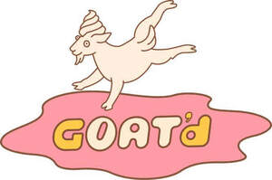

Trade Mark Journal No.2026/007 13 February 2026
UK00004332450 29 January 2026 (29,30,35,43)

- Class 29
- Dairy frozen desserts; non-dairy frozen desserts, namely oat-based frozen desserts; plant-based yoghurt; oat-based yoghurt; overnight oats; prepared oat based foods and desserts; milk substitutes; plant-based milk substitutes; oat milk; dairy substitutes made from oats; fruit- and nut-based toppings for desserts; plant-based toppings for desserts.
- Class 30
- Sorbets and plant-based ice cream; oat-based ice cream; breakfast cereals; muesli; granola; porridge; cereal-based snack foods; oat-based snack foods; toppings for desserts consisting primarily of cereals, chocolate, or confectionery; chocolate sauces; caramel sauces; maple syrups; fruit sauces; nut sauces; flavoured syrups for food and confectionery; bakery goods and biscuits provided as dessert accompaniments.
- Class 35
- Retail store services and online retail store services relating exclusively to the sale of oat-based frozen desserts, overnight oats, cereals, granola, sauces, syrups, toppings, snack foods, and beverages sold by the brand owner; all of the foregoing excluding the retail sale of tea, coffee, and food- or beverage preparation equipment.
- Class 43
- Self-service and quick-service food outlet services specialising in oat-based frozen desserts and overnight oats; take-away services limited to oat-based desserts, overnight oats, and beverages; preparation and provision of oat-based foods and beverages for consumption on or off the premises; all of the foregoing excluding alcohol.
GOAT'd Limited